Семинар 1 · kNN: близость, валидация и устойчивость
Материал можно читать без запуска Python. Код и сохранённые результаты показаны в порядке тетради; для запуска упражнений скачайте исходный файл.
Скачать .ipynb ↓Формат: управляемая демонстрация на 90 минут — сначала прогноз аудитории, затем запуск клетки и объяснение результата.
К концу семинара студент сможет:
- восстановить предсказание k ближайших соседей по таблице расстояний;
- объяснить, как число соседей, масштаб признаков и функция расстояния меняют ответ;
- отличить расстояние внутри алгоритма, loss отдельного предсказания и метрику качества;
- выбрать гиперпараметр только по validation/CV и один раз оценить итог на test;
- увидеть неустойчивость решения к отдельной точке и к конкретному разбиению данных;
- распознать утечку через preprocessing, почти дубликаты, группы и время.
Главный вопрос семинара: что именно мы считаем похожим — и на каких данных имеем право проверять это предположение?
Ритм занятия
| Время | Блок | Действие аудитории |
|---|---|---|
| 0–20 мин | Механика kNN | назвать соседей и предсказать класс до запуска |
| 20–35 мин | Масштаб и расстояние | объяснить, почему тот же объект получил другой ответ |
| 35–50 мин | Устойчивость | предсказать, какая часть границы изменится без одной точки |
| 50–70 мин | Validation и CV | выбрать k, не заглядывая в test |
| 70–83 мин | Leakage | найти нарушение в трёх схемах проверки |
| 83–90 мин | Итоги | сформулировать один обязательный вопрос к данным |
Правило для каждой демонстрации: 30 секунд подумать → проголосовать → обсудить в паре → запустить → объяснить.
Блоки «YSDA riddle» и «размерность» в конце — резерв, если аудитория идёт быстро.
# Если Bokeh или Plotly отсутствуют в новом окружении/Colab,
# раскомментируйте и один раз выполните следующую строку:
# %pip install -q bokeh plotlyimport warnings
import matplotlib.pyplot as plt
import numpy as np
import pandas as pd
import sklearn
from IPython.display import display
from matplotlib.colors import ListedColormap
from sklearn.datasets import load_digits
from sklearn.feature_selection import SelectKBest, f_classif
from sklearn.metrics import ConfusionMatrixDisplay, accuracy_score
from sklearn.model_selection import (
GridSearchCV,
StratifiedKFold,
cross_val_score,
train_test_split,
)
from sklearn.neighbors import KNeighborsClassifier
from sklearn.pipeline import Pipeline
from sklearn.preprocessing import StandardScaler
from sklearn.svm import LinearSVC
warnings.filterwarnings("ignore", category=FutureWarning)
SEED = 42
rng = np.random.default_rng(SEED)
np.random.seed(SEED)
COLORS = {"A": "#F2994A", "B": "#2F80ED"}
REGION_CMAP = ListedColormap(["#FDE3C8", "#D8E9FF"])
plt.rcParams.update(
{
"figure.figsize": (10, 6),
"figure.dpi": 110,
"axes.grid": True,
"axes.spines.top": False,
"axes.spines.right": False,
"font.size": 12,
}
)
print(f"Python scientific stack ready · scikit-learn {sklearn.__version__}")Python scientific stack ready · scikit-learn 1.9.0
0. Карта задачи из лекции
Не смешиваем три разных объекта:
- расстояние d(\mathbf x, \mathbf z) сравнивает два объекта и определяет соседей;
- loss \ell(y, \widehat y) задаёт цену одной ошибки;
- метрика качества Q агрегирует качество на выборке.
Для kNN «обучить модель» означает сохранить train-объекты. Однако выбор признаков, масштаба, расстояния и K уже является частью модели и должен проверяться честно.
1. Один и тот же маленький мир
Используем те же точки, что и в сегодняшней лекции/интерактивной демонстрации. Оси пока называются x1 и x2: смысл признаков не должен подменять геометрию красивой историей.
training = pd.DataFrame(
[
("A1", 1.0, 1.0, "A"),
("A2", 1.0, 3.0, "A"),
("A3", 2.0, 2.0, "A"),
("A4", 2.0, 4.0, "A"),
("A5", 3.0, 1.0, "A"),
("B1", 5.0, 5.0, "B"),
("B2", 5.0, 7.0, "B"),
("B3", 6.0, 6.0, "B"),
("B4", 7.0, 5.0, "B"),
("B5", 7.0, 7.0, "B"),
("B0", 3.1, 2.2, "B"), # одиночный выброс среди A
],
columns=["id", "x1", "x2", "label"],
)
validation = pd.DataFrame(
[
("V1", 2.5, 2.2, "A"),
("V2", 3.0, 2.2, "A"),
("V3", 5.5, 5.5, "B"),
("V4", 6.5, 6.0, "B"),
("V5", 4.2, 4.0, "B"),
],
columns=["id", "x1", "x2", "label"],
)
queries = {
"outlier": np.array([3.0, 2.2]),
"scale": np.array([4.0, 4.0]),
"metric": np.array([3.1, 5.0]),
}
display(training)| id | x1 | x2 | label | |
|---|---|---|---|---|
| 0 | A1 | 1.0 | 1.0 | A |
| 1 | A2 | 1.0 | 3.0 | A |
| 2 | A3 | 2.0 | 2.0 | A |
| 3 | A4 | 2.0 | 4.0 | A |
| 4 | A5 | 3.0 | 1.0 | A |
| 5 | B1 | 5.0 | 5.0 | B |
| 6 | B2 | 5.0 | 7.0 | B |
| 7 | B3 | 6.0 | 6.0 | B |
| 8 | B4 | 7.0 | 5.0 | B |
| 9 | B5 | 7.0 | 7.0 | B |
| 10 | B0 | 3.1 | 2.2 | B |
def distances_to_query(points, query, metric="euclidean", scale=(1.0, 1.0)):
delta = (points[["x1", "x2"]].to_numpy() - np.asarray(query)) * np.asarray(scale)
if metric == "euclidean":
return np.sqrt((delta**2).sum(axis=1))
if metric == "manhattan":
return np.abs(delta).sum(axis=1)
raise ValueError("metric must be 'euclidean' or 'manhattan'")
def neighbor_table(points, query, k=3, metric="euclidean", scale=(1.0, 1.0)):
table = points.copy()
table["distance"] = distances_to_query(points, query, metric=metric, scale=scale)
table = table.sort_values(["distance", "id"]).reset_index(drop=True)
table["neighbor"] = np.arange(1, len(table) + 1) <= k
return table
def predict_query(points, query, k=3, metric="euclidean", scale=(1.0, 1.0)):
nearest = neighbor_table(points, query, k=k, metric=metric, scale=scale).head(k)
counts = nearest["label"].value_counts()
winners = set(counts[counts == counts.max()].index)
# При ничьей выбираем класс ближайшего среди победителей — правило задано явно.
prediction = nearest.loc[nearest["label"].isin(winners), "label"].iloc[0]
return prediction, nearest
def plot_neighbors(
ax,
points,
query,
k,
metric="euclidean",
scale=(1.0, 1.0),
title=None,
transform_coordinates=False,
):
prediction, nearest = predict_query(points, query, k=k, metric=metric, scale=scale)
display_scale = np.asarray(scale) if transform_coordinates else np.ones(2)
for label, group in points.groupby("label"):
ax.scatter(
group.x1 * display_scale[0],
group.x2 * display_scale[1],
s=120,
color=COLORS[label],
edgecolor="white",
linewidth=1.2,
label=f"class {label}",
zorder=3,
)
for row in points.itertuples():
displayed_point = np.array([row.x1, row.x2]) * display_scale
ax.annotate(row.id, displayed_point, xytext=(5, 5), textcoords="offset points", fontsize=9)
displayed_query = np.asarray(query) * display_scale
ax.scatter(*displayed_query, marker="D", s=170, color="white", edgecolor="black", linewidth=2, zorder=5)
ax.annotate("Q", displayed_query, xytext=(7, -16), textcoords="offset points", weight="bold")
for row in nearest.itertuples():
displayed_neighbor = np.array([row.x1, row.x2]) * display_scale
ax.plot(
[displayed_query[0], displayed_neighbor[0]],
[displayed_query[1], displayed_neighbor[1]],
color="#333333",
alpha=0.55,
zorder=2,
)
ax.set(
xlim=(0, 8 * display_scale[0]),
ylim=(0, 8 * display_scale[1]),
xlabel="x1" if display_scale[0] == 1 else f"{display_scale[0]:g} · x1",
ylabel="x2" if display_scale[1] == 1 else f"x2′ = {display_scale[1]:g} · x2",
)
ax.set_xticks(np.arange(0, 8 * display_scale[0] + 0.1, display_scale[0]))
ax.set_yticks(np.arange(0, 8 * display_scale[1] + 0.1, display_scale[1]))
if transform_coordinates and display_scale[1] > 1:
ax.set_yticks(np.arange(0, 8 * display_scale[1] + 0.1, 1), minor=True)
ax.grid(which="minor", alpha=0.14, linewidth=0.6)
ax.grid(which="major", alpha=0.45, linewidth=1.0)
ax.set_aspect("equal")
ax.set_title(title or f"k={k} → class {prediction}")
return prediction, nearestЭксперимент 1. Одна точка решает всё?
Запрос Q = (3.0, 2.2) на самом деле относится к классу A.
До запуска:
- Какой объект ближайший?
- Какой ответ даст
k=1? - Изменится ли ответ при
k=3? Назовите трёх соседей.
query = queries["outlier"]
fig, axes = plt.subplots(1, 2, figsize=(13, 5.5), constrained_layout=True)
summaries = []
for ax, k in zip(axes, [1, 3]):
prediction, nearest = plot_neighbors(ax, training, query, k=k)
summaries.append(
{
"k": k,
"prediction": prediction,
"neighbors": ", ".join(nearest.id),
"votes": dict(nearest.label.value_counts()),
}
)
plt.show()
display(pd.DataFrame(summaries))
display(neighbor_table(training, query, k=3).head(5).round({"distance": 3}))
assert [row["prediction"] for row in summaries] == ["B", "A"]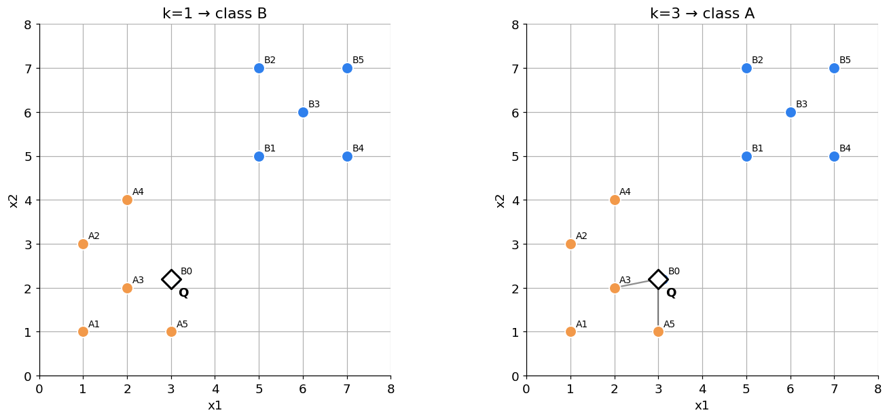
| k | prediction | neighbors | votes | |
|---|---|---|---|---|
| 0 | 1 | B | B0 | {'B': 1} |
| 1 | 3 | A | B0, A3, A5 | {'A': 2, 'B': 1} |
| id | x1 | x2 | label | distance | neighbor | |
|---|---|---|---|---|---|---|
| 0 | B0 | 3.1 | 2.2 | B | 0.100 | True |
| 1 | A3 | 2.0 | 2.0 | A | 1.020 | True |
| 2 | A5 | 3.0 | 1.0 | A | 1.200 | True |
| 3 | A4 | 2.0 | 4.0 | A | 2.059 | False |
| 4 | A2 | 1.0 | 3.0 | A | 2.154 | False |
Разбор
При k=1 выброс B0 находится на расстоянии 0.1 и целиком определяет неправильный ответ B. При k=3 следующими идут две точки A, поэтому голосование A:B = 2:1 возвращает A.
Малое k даёт гибкое, но чувствительное локальное правило. Большее k сглаживает одиночный шум, но может стереть настоящий маленький класс. Универсально лучшего k нет.
Эксперимент 2. Масштаб — это изменение геометрии
До запуска:
Запрос теперь стоит точно в узле сетки: Q=(4,4).
- В исходных координатах сравните кандидатов A4=(2,4) и B1=(5,5).
- Затем замените второй признак на x'_2=3x_2. Все значения второй координаты, включая координату запроса, действительно умножаются на 3: Q'=(4,12).
- Предскажите, кто окажется ближе после преобразования.
На втором графике крупные горизонтальные линии соответствуют одному старому шагу x2, то есть трём новым единицам. Тонкая сетка показывает каждый шаг новой шкалы.
SCALE_FACTOR = 3
query = queries["scale"]
scale_experiments = [
("До: Q = (4, 4)", (1, 1)),
("После: Q′ = (4, 12), x2′ = 3 · x2", (1, SCALE_FACTOR)),
]
fig = plt.figure(figsize=(10, 9), constrained_layout=True)
grid = fig.add_gridspec(1, 2, width_ratios=[1.0, 0.42])
axes = [fig.add_subplot(grid[0, 0]), fig.add_subplot(grid[0, 1])]
scale_rows = []
for ax, (name, scale) in zip(axes, scale_experiments):
prediction, nearest = plot_neighbors(
ax,
training,
query,
k=1,
metric="euclidean",
scale=scale,
title=name,
transform_coordinates=True,
)
a4_distance = neighbor_table(training, query, k=1, scale=scale).query("id == 'A4'").distance.iloc[0]
b1_distance = neighbor_table(training, query, k=1, scale=scale).query("id == 'B1'").distance.iloc[0]
scale_rows.append(
{
"coordinates": "(x1, x2)" if scale[1] == 1 else "(x1, 3·x2)",
"Q": "(4, 4)" if scale[1] == 1 else "(4, 12)",
"A4": "(2, 4)" if scale[1] == 1 else "(2, 12)",
"distance to A4": a4_distance,
"B1": "(5, 5)" if scale[1] == 1 else "(5, 15)",
"distance to B1": b1_distance,
"nearest": nearest.id.iloc[0],
"prediction": prediction,
}
)
plt.show()
display(pd.DataFrame(scale_rows).round({"distance to A4": 3, "distance to B1": 3}))
assert [row["nearest"] for row in scale_rows] == ["B1", "A4"]
assert [row["prediction"] for row in scale_rows] == ["B", "A"]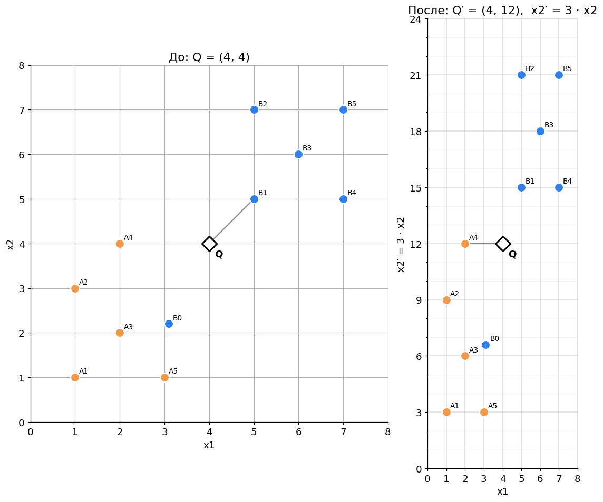
| coordinates | Q | A4 | distance to A4 | B1 | distance to B1 | nearest | prediction | |
|---|---|---|---|---|---|---|---|---|
| 0 | (x1, x2) | (4, 4) | (2, 4) | 2.0 | (5, 5) | 1.414 | B1 | B |
| 1 | (x1, 3·x2) | (4, 12) | (2, 12) | 2.0 | (5, 15) | 3.162 | A4 | A |
Эксперимент 2b. Другая функция расстояния — другая близость
Теперь координаты и масштаб не меняются. Для Q=(3.1,5.0) сравниваем только Euclidean и Manhattan.
До запуска: может ли смениться ближайший объект без изменения точек и их единиц измерения?
metric_experiments = [
("Euclidean", "euclidean"),
("Manhattan", "manhattan"),
]
fig, axes = plt.subplots(1, 2, figsize=(12, 5.5), constrained_layout=True)
metric_rows = []
for ax, (name, metric) in zip(axes, metric_experiments):
prediction, nearest = plot_neighbors(
ax, training, queries["metric"], k=1, metric=metric, title=name
)
metric_rows.append(
{
"distance": name,
"nearest": nearest.id.iloc[0],
"value": nearest.distance.iloc[0],
"prediction": prediction,
}
)
plt.show()
display(pd.DataFrame(metric_rows).round({"value": 3}))
assert [row["nearest"] for row in metric_rows] == ["A4", "B1"]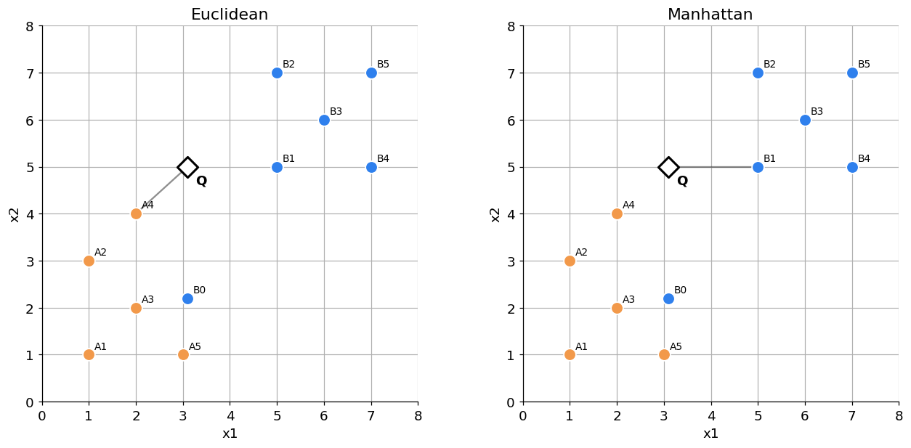
| distance | nearest | value | prediction | |
|---|---|---|---|---|
| 0 | Euclidean | A4 | 1.487 | A |
| 1 | Manhattan | B1 | 1.900 | B |
Разбор
Масштабирование — не нейтральная косметика: оно меняет относительную важность координат в расстоянии. Статистики масштабирования нужно оценивать только на train, а затем применять к validation/test.
Функция расстояния кодирует допустимую геометрию слова «похожий». Это не то же самое, что evaluation metric вроде accuracy.
Интерактивная карта соседей · Bokeh
Это развитие знакомой визуализации из семинара по word2vec. Там точками будут слова, здесь — train-объекты.
- Перетащите белый ромб
Qинструментом Point Draw. - Меняйте
kи Euclidean/Manhattan. - Наведите курсор на объект, чтобы увидеть его ID, класс и текущее расстояние.
- Колесо мыши масштабирует график; серые линии показывают выбранных соседей.
Вопрос аудитории: может ли набор соседей поменяться, хотя точка запроса и train-объекты остались на местах?
from bokeh.io import output_notebook, show
from bokeh.layouts import column, row
from bokeh.models import ColumnDataSource, CustomJS, Div, HoverTool, PointDrawTool, Select, Slider
from bokeh.plotting import figure
from bokeh.resources import INLINE
output_notebook(resources=INLINE, hide_banner=True)
initial_query = queries["outlier"].copy()
initial_prediction, initial_neighbors = predict_query(training, initial_query, k=3)
initial_distances = distances_to_query(training, initial_query)
initial_neighbor_ids = set(initial_neighbors.id)
point_source = ColumnDataSource(
{
"x": training.x1.to_list(),
"y": training.x2.to_list(),
"id": training.id.to_list(),
"label": training.label.to_list(),
"color": training.label.map(COLORS).to_list(),
"distance": initial_distances.tolist(),
"size": [18 if item_id in initial_neighbor_ids else 11 for item_id in training.id],
"alpha": [1.0 if item_id in initial_neighbor_ids else 0.55 for item_id in training.id],
}
)
query_source = ColumnDataSource({"x": [initial_query[0]], "y": [initial_query[1]]})
segment_source = ColumnDataSource(
{
"x0": [initial_query[0]] * len(initial_neighbors),
"y0": [initial_query[1]] * len(initial_neighbors),
"x1": initial_neighbors.x1.to_list(),
"y1": initial_neighbors.x2.to_list(),
}
)
interactive_plot = figure(
width=780,
height=560,
x_range=(0, 8),
y_range=(0, 8),
title=f"k=3 · Euclidean · prediction: {initial_prediction}",
tools="pan,wheel_zoom,box_zoom,reset,save",
active_scroll="wheel_zoom",
)
interactive_plot.xaxis.axis_label = "x1"
interactive_plot.yaxis.axis_label = "x2"
interactive_plot.grid.grid_line_alpha = 0.25
interactive_plot.segment(
"x0", "y0", "x1", "y1", source=segment_source,
line_color="#555555", line_alpha=0.55, line_width=2,
)
point_renderer = interactive_plot.scatter(
"x", "y", source=point_source, size="size", fill_color="color", fill_alpha="alpha",
line_color="white", line_width=1.5, marker="circle",
)
query_renderer = interactive_plot.scatter(
"x", "y", source=query_source, size=22, fill_color="white", line_color="black",
line_width=2.5, marker="diamond",
)
interactive_plot.add_tools(
HoverTool(
renderers=[point_renderer],
tooltips=[("object", "@id"), ("class", "@label"), ("distance", "@distance{0.000}")],
)
)
draw_tool = PointDrawTool(renderers=[query_renderer], add=False)
interactive_plot.add_tools(draw_tool)
interactive_plot.toolbar.active_drag = draw_tool
k_slider = Slider(start=1, end=9, value=3, step=2, title="number of neighbors k")
metric_select = Select(title="distance", value="euclidean", options=["euclidean", "manhattan"])
status = Div(
text=f"<b>Prediction: {initial_prediction}</b> · neighbors: {', '.join(initial_neighbors.id)}",
width=780,
height=35,
)
callback = CustomJS(
args={
"points": point_source,
"query": query_source,
"segments": segment_source,
"k_widget": k_slider,
"metric_widget": metric_select,
"status": status,
"plot": interactive_plot,
},
code="""
const qx = query.data.x[0];
const qy = query.data.y[0];
const k = k_widget.value;
const metric = metric_widget.value;
const xs = points.data.x;
const ys = points.data.y;
const labels = points.data.label;
const ids = points.data.id;
const distances = [];
for (let i = 0; i < xs.length; i++) {
const dx = xs[i] - qx;
const dy = ys[i] - qy;
distances.push(metric === "euclidean" ? Math.sqrt(dx * dx + dy * dy) : Math.abs(dx) + Math.abs(dy));
}
const order = Array.from(xs.keys()).sort((a, b) => distances[a] - distances[b] || ids[a].localeCompare(ids[b]));
const chosen = order.slice(0, k);
const chosenSet = new Set(chosen);
const counts = {};
for (const index of chosen) counts[labels[index]] = (counts[labels[index]] || 0) + 1;
const maxVotes = Math.max(...Object.values(counts));
let prediction = labels[chosen[0]];
for (const index of chosen) {
if (counts[labels[index]] === maxVotes) {
prediction = labels[index];
break;
}
}
points.data.distance = distances;
points.data.size = xs.map((_, i) => chosenSet.has(i) ? 18 : 11);
points.data.alpha = xs.map((_, i) => chosenSet.has(i) ? 1.0 : 0.55);
points.selected.indices = chosen;
segments.data = {
x0: chosen.map(() => qx),
y0: chosen.map(() => qy),
x1: chosen.map(i => xs[i]),
y1: chosen.map(i => ys[i]),
};
const metricName = metric === "euclidean" ? "Euclidean" : "Manhattan";
plot.title.text = `k=${k} · ${metricName} · prediction: ${prediction}`;
status.text = `<b>Prediction: ${prediction}</b> · neighbors: ${chosen.map(i => ids[i]).join(", ")}`;
points.change.emit();
segments.change.emit();
""",
)
for widget in (k_slider, metric_select):
widget.js_on_change("value", callback)
query_source.js_on_change("data", callback)
show(column(row(k_slider, metric_select), interactive_plot, status))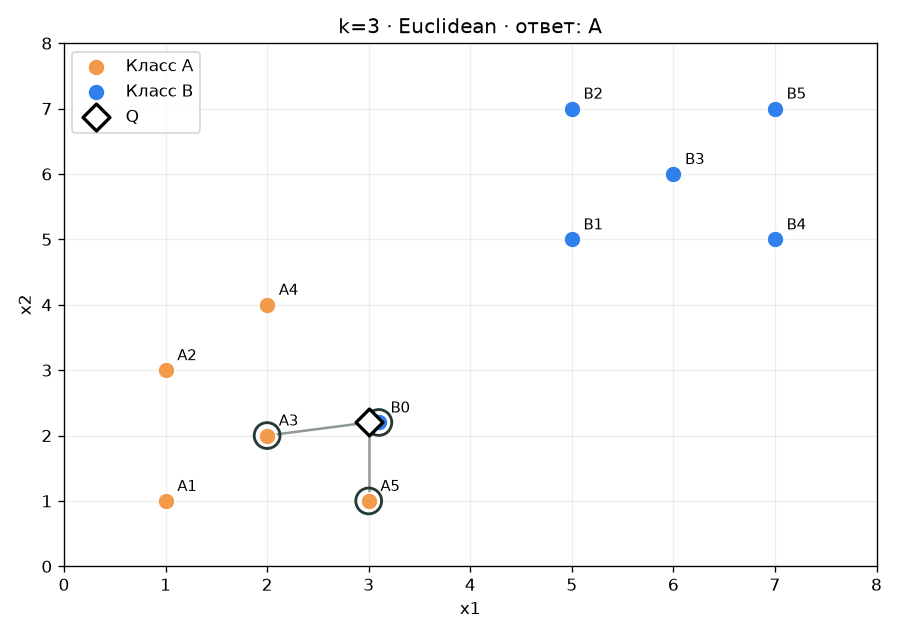
2. Устойчивость решения
Сначала посмотрим, как k меняет границу решений. Затем удалим ровно одну точку — выброс B0 — и измерим долю плоскости, на которой предсказание поменялось.
До запуска: расположите k=1, k=3, k=7 от самой «рваной» границы к самой гладкой.
def mesh_for(points, step=0.04, border=0.6):
x_min, x_max = points.x1.min() - border, points.x1.max() + border
y_min, y_max = points.x2.min() - border, points.x2.max() + border
xx, yy = np.meshgrid(
np.arange(x_min, x_max, step),
np.arange(y_min, y_max, step),
)
return xx, yy
def fit_and_grid_predict(points, k, xx, yy):
model = KNeighborsClassifier(n_neighbors=k)
model.fit(points[["x1", "x2"]].to_numpy(), points.label.to_numpy())
labels = model.predict(np.c_[xx.ravel(), yy.ravel()])
return (labels == "B").astype(int).reshape(xx.shape)
xx, yy = mesh_for(training)
fig, axes = plt.subplots(1, 3, figsize=(15, 4.8), constrained_layout=True)
for ax, k in zip(axes, [1, 3, 7]):
zz = fit_and_grid_predict(training, k, xx, yy)
ax.contourf(xx, yy, zz, levels=[-0.5, 0.5, 1.5], cmap=REGION_CMAP, alpha=0.95)
for label, group in training.groupby("label"):
ax.scatter(group.x1, group.x2, s=80, color=COLORS[label], edgecolor="white")
ax.set(title=f"k={k}", xlabel="x1", ylabel="x2", xlim=(0.4, 7.6), ylim=(0.4, 7.6))
ax.set_aspect("equal")
plt.show()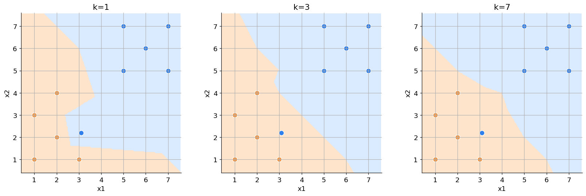
without_outlier = training.query("id != 'B0'").copy()
stability_rows = []
fig, axes = plt.subplots(1, 3, figsize=(15, 4.6), constrained_layout=True)
for ax, k in zip(axes, [1, 3, 7]):
pred_full = fit_and_grid_predict(training, k, xx, yy)
pred_without = fit_and_grid_predict(without_outlier, k, xx, yy)
changed = pred_full != pred_without
changed_share = changed.mean()
stability_rows.append({"k": k, "share of grid changed": changed_share})
ax.contourf(xx, yy, changed.astype(int), levels=[-0.5, 0.5, 1.5], cmap=ListedColormap(["#F4F4F4", "#EB5757"]))
ax.scatter(training.x1, training.x2, c=training.label.map(COLORS), s=55, edgecolor="white")
b0 = training.query("id == 'B0'").iloc[0]
ax.scatter(b0.x1, b0.x2, marker="x", s=160, linewidth=3, color="black")
ax.set(title=f"k={k}: changed {changed_share:.1%}", xlabel="x1", ylabel="x2")
ax.set_aspect("equal")
plt.show()
display(pd.DataFrame(stability_rows).style.format({"share of grid changed": "{:.2%}"}))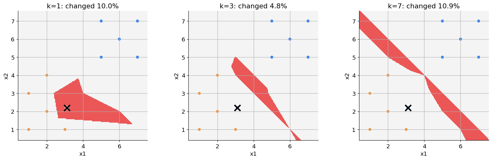
| k | share of grid changed | |
|---|---|---|
| 0 | 1 | 9.96% |
| 1 | 3 | 4.76% |
| 2 | 7 | 10.89% |
Интерпретация устойчивости. Красная область — запросы, для которых удаление одного наблюдения меняет ответ. Это не полный формальный анализ algorithmic stability, но наглядная операционализация вопроса: «насколько решение зависит от одной строки train?»
В этом примере k=3 устойчивее и k=1, и k=7. Увеличение k часто сглаживает влияние отдельной точки, но не гарантирует монотонного улучшения: удаление объекта меняет и состав соседей, и локальные большинства. При слишком большом k решение всё сильнее зависит от глобального баланса классов и теряет локальную структуру. Поэтому устойчивость — часть компромисса, который нужно проверять на новых данных.
3. Train ≠ validation ≠ test
На тех же маленьких данных сравним k ∈ {1, 3, 5}.
До запуска: какое k победит, если смотреть только на train? Почему результат почти предопределён устройством 1-NN?
X_train_toy = training[["x1", "x2"]]
y_train_toy = training.label
X_val_toy = validation[["x1", "x2"]]
y_val_toy = validation.label
scores = []
for k in [1, 3, 5]:
model = KNeighborsClassifier(n_neighbors=k)
model.fit(X_train_toy, y_train_toy)
scores.append(
{
"k": k,
"train accuracy": model.score(X_train_toy, y_train_toy),
"validation accuracy": model.score(X_val_toy, y_val_toy),
}
)
toy_scores = pd.DataFrame(scores)
display(toy_scores.style.format({"train accuracy": "{:.2f}", "validation accuracy": "{:.2f}"}))
assert np.allclose(toy_scores["validation accuracy"], [0.8, 1.0, 1.0])| k | train accuracy | validation accuracy | |
|---|---|---|---|
| 0 | 1 | 1.00 | 0.80 |
| 1 | 3 | 0.91 | 1.00 |
| 2 | 5 | 0.91 | 1.00 |
Разбор
1-NN получает идеальный train score, потому что каждая train-точка является собственным ближайшим соседом — включая выброс. Validation предпочитает более сглаженное решение.
После многократного сравнения моделей на validation его score уже нельзя честно объявить финальной оценкой: мы подстроились под этот набор.
4. Реальные данные: цифры 8×8
Теперь применим тот же pipeline к встроенному датасету sklearn.datasets.load_digits: 1797 изображений, каждое превращено в 64 признака-пикселя. Ничего скачивать не нужно.
Test отделяем до выбора k и не используем до последней клетки блока.
digits = load_digits()
X, y = digits.data, digits.target
fig, axes = plt.subplots(2, 6, figsize=(10, 4), constrained_layout=True)
for ax, image, label in zip(axes.flat, digits.images[:12], y[:12]):
ax.imshow(image, cmap="gray_r")
ax.set_title(f"label = {label}")
ax.axis("off")
plt.show()
X_dev, X_test, y_dev, y_test = train_test_split(
X,
y,
test_size=0.20,
random_state=SEED,
stratify=y,
)
print(f"development: {X_dev.shape}, untouched test: {X_test.shape}")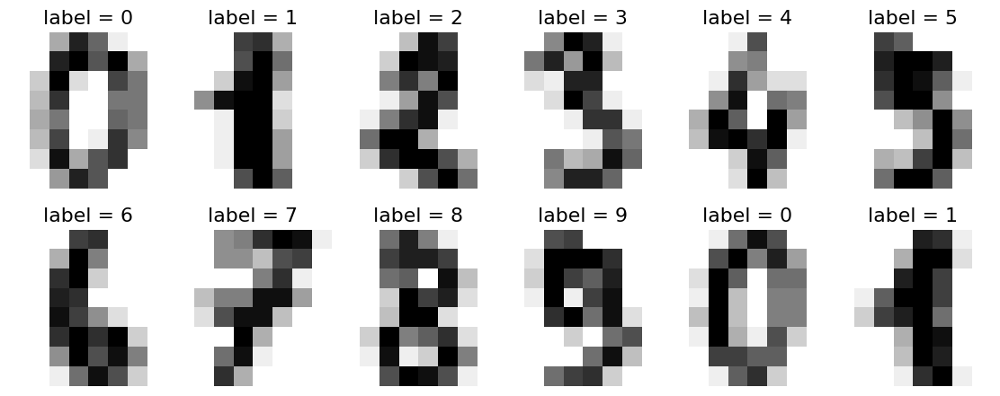
development: (1437, 64), untouched test: (360, 64)
Необязательный мост: вращаемая 3D-проекция · Plotly
В positional encoding мы уже использовали scatter_3d. Здесь применяем ту же механику к цифрам: PCA сжимает 64 пиксельных признака до трёх координат для просмотра.
- Зажмите мышь и вращайте облако.
- Колесо меняет масштаб, hover показывает цифру и номер объекта.
- Ищите плотные острова и области смешения классов.
Важно: это проекция для визуализации, а не пространство, в котором ниже обучается kNN. Модель продолжает использовать исходные 64 признака. Позже мы вернёмся к такому же приёму для word embeddings и positional encodings. Если времени мало, этот блок можно пропустить без потери основной линии.
import plotly.express as px
from sklearn.decomposition import PCA
visual_rng = np.random.default_rng(SEED)
visual_indices = np.sort(visual_rng.choice(len(X_dev), size=900, replace=False))
X_visual = StandardScaler().fit_transform(X_dev[visual_indices])
projection_3d = PCA(n_components=3, random_state=SEED).fit_transform(X_visual)
projection_frame = pd.DataFrame(
{
"PC1": projection_3d[:, 0],
"PC2": projection_3d[:, 1],
"PC3": projection_3d[:, 2],
"digit": y_dev[visual_indices].astype(str),
"sample": visual_indices,
}
)
figure_3d = px.scatter_3d(
projection_frame,
x="PC1",
y="PC2",
z="PC3",
color="digit",
hover_data={"sample": True, "PC1": ":.2f", "PC2": ":.2f", "PC3": ":.2f"},
color_discrete_sequence=px.colors.qualitative.D3,
title="Digits: 64D → 3D PCA projection (visualization only)",
)
figure_3d.update_traces(marker={"size": 3.5, "opacity": 0.72})
figure_3d.update_layout(
height=680,
margin={"l": 0, "r": 0, "t": 55, "b": 0},
legend_title_text="digit",
)
figure_3d.show(renderer="notebook")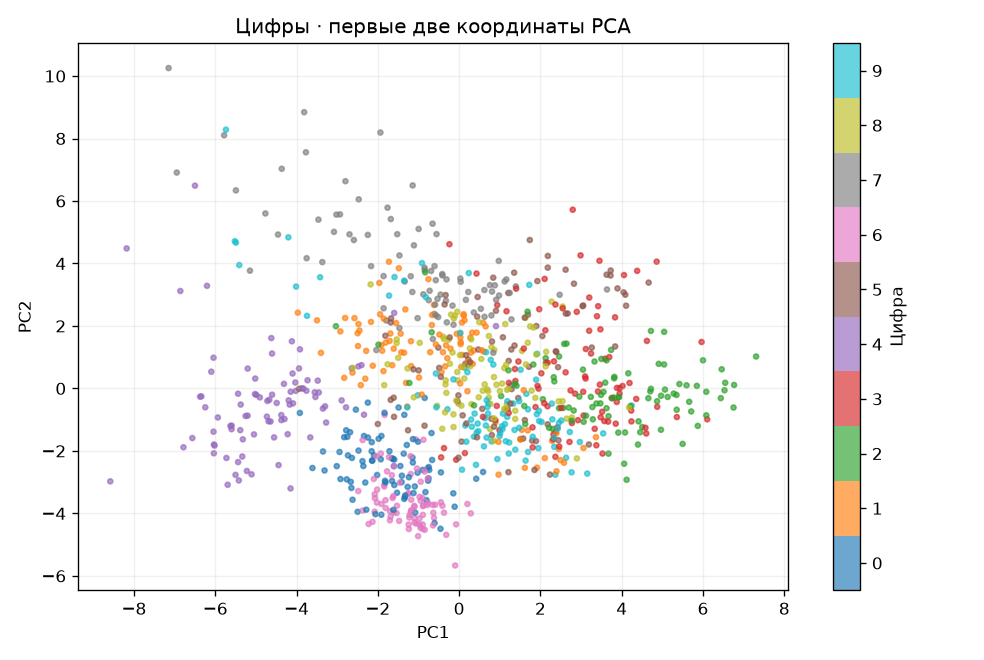
Выбор k внутри cross-validation
StandardScaler находится внутри Pipeline. Поэтому на каждом fold средние и масштабы вычисляются только по train-части этого fold, а не заранее по всем данным.
До запуска: где ожидаете максимальный train score? Совпадёт ли он с максимумом CV?
candidate_k = list(range(1, 16, 2))
cv = StratifiedKFold(n_splits=5, shuffle=True, random_state=SEED)
pipeline = Pipeline(
[
("scale", StandardScaler()),
("knn", KNeighborsClassifier()),
]
)
search = GridSearchCV(
pipeline,
param_grid={"knn__n_neighbors": candidate_k},
scoring="accuracy",
cv=cv,
return_train_score=True,
n_jobs=-1,
)
search.fit(X_dev, y_dev)
cv_results = pd.DataFrame(search.cv_results_)[
["param_knn__n_neighbors", "mean_train_score", "mean_test_score", "std_test_score"]
].rename(
columns={
"param_knn__n_neighbors": "k",
"mean_train_score": "train accuracy",
"mean_test_score": "CV accuracy",
"std_test_score": "CV fold std",
}
)
cv_results["k"] = cv_results["k"].astype(int)
fig, ax = plt.subplots(figsize=(9, 5))
ax.plot(cv_results.k, cv_results["train accuracy"], "o--", label="train")
ax.errorbar(
cv_results.k,
cv_results["CV accuracy"],
yerr=cv_results["CV fold std"],
fmt="o-",
capsize=4,
label="cross-validation",
)
ax.set(xlabel="number of neighbors k", ylabel="accuracy", xticks=candidate_k)
ax.legend()
plt.show()
display(cv_results.style.format({"train accuracy": "{:.3f}", "CV accuracy": "{:.3f}", "CV fold std": "{:.3f}"}))
print(f"Selected only on development data: k = {search.best_params_['knn__n_neighbors']}")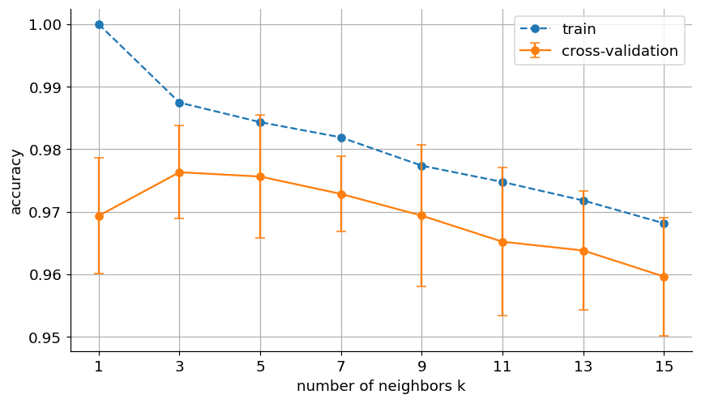
| k | train accuracy | CV accuracy | CV fold std | |
|---|---|---|---|---|
| 0 | 1 | 1.000 | 0.969 | 0.009 |
| 1 | 3 | 0.987 | 0.976 | 0.007 |
| 2 | 5 | 0.984 | 0.976 | 0.010 |
| 3 | 7 | 0.982 | 0.973 | 0.006 |
| 4 | 9 | 0.977 | 0.969 | 0.011 |
| 5 | 11 | 0.975 | 0.965 | 0.012 |
| 6 | 13 | 0.972 | 0.964 | 0.009 |
| 7 | 15 | 0.968 | 0.960 | 0.009 |
Selected only on development data: k = 3
Другой вопрос: стабилен ли победитель?
Предыдущий график сравнивал разные k при одной зафиксированной схеме из пяти folds и выбрал победителя.
Этот блок повторяет весь выбор при шести других корректных разбиениях на folds. Цвет клетки — средняя CV accuracy, звезда — победитель строки. Мы проверяем не качество ещё раз, а устойчивость вывода «лучший k равен …».
partition_records = []
partition_seeds = [11, 22, 33, 44, 55, 66]
for partition_id, partition_seed in enumerate(partition_seeds, start=1):
repeated_partition = StratifiedKFold(
n_splits=3,
shuffle=True,
random_state=partition_seed,
)
for k in candidate_k:
model = Pipeline(
[
("scale", StandardScaler()),
("knn", KNeighborsClassifier(n_neighbors=k)),
]
)
score = cross_val_score(
model,
X_dev,
y_dev,
cv=repeated_partition,
scoring="accuracy",
n_jobs=-1,
).mean()
partition_records.append(
{
"partition": partition_id,
"k": k,
"CV accuracy": score,
}
)
partition_scores = pd.DataFrame(partition_records)
best_per_partition = (
partition_scores.sort_values(["partition", "CV accuracy", "k"], ascending=[True, False, True])
.groupby("partition", as_index=False)
.first()
)
heatmap_data = partition_scores.pivot(index="partition", columns="k", values="CV accuracy")
fig, (ax_heatmap, ax_counts) = plt.subplots(
1,
2,
figsize=(14, 5.5),
gridspec_kw={"width_ratios": [3.2, 1]},
constrained_layout=True,
)
image = ax_heatmap.imshow(heatmap_data, cmap="YlGnBu", aspect="auto")
ax_heatmap.set(
xticks=np.arange(len(candidate_k)),
xticklabels=candidate_k,
yticks=np.arange(len(partition_seeds)),
yticklabels=[f"partition {i}" for i in range(1, len(partition_seeds) + 1)],
xlabel="candidate k",
ylabel="new random CV partition",
title="Mean 3-fold CV accuracy; ★ marks the winner in each row",
)
for row_index, partition_id in enumerate(heatmap_data.index):
winning_k = int(best_per_partition.loc[best_per_partition.partition == partition_id, "k"].iloc[0])
for column_index, k in enumerate(heatmap_data.columns):
value = heatmap_data.loc[partition_id, k]
marker = " ★" if k == winning_k else ""
text_color = "white" if image.norm(value) > 0.48 else "black"
ax_heatmap.text(
column_index,
row_index,
f"{value:.3f}{marker}",
ha="center",
va="center",
fontsize=9,
color=text_color,
weight="bold" if k == winning_k else "normal",
)
fig.colorbar(image, ax=ax_heatmap, shrink=0.82, label="CV accuracy")
selection_counts = best_per_partition.k.value_counts().reindex(candidate_k, fill_value=0)
ax_counts.bar(selection_counts.index.astype(str), selection_counts.values, color="#2F80ED")
ax_counts.set(
xlabel="selected k",
ylabel="number of partitions",
title="How often did k win?",
ylim=(0, len(partition_seeds)),
)
plt.show()
display(best_per_partition.style.format({"CV accuracy": "{:.3f}"}))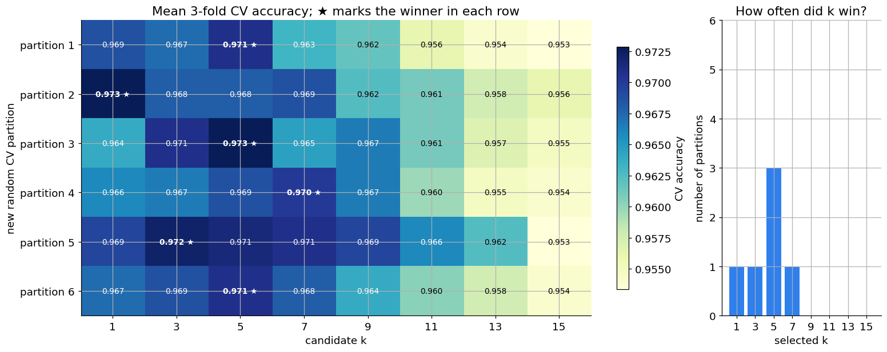
| partition | k | CV accuracy | |
|---|---|---|---|
| 0 | 1 | 5 | 0.971 |
| 1 | 2 | 1 | 0.973 |
| 2 | 3 | 5 | 0.973 |
| 3 | 4 | 7 | 0.970 |
| 4 | 5 | 3 | 0.972 |
| 5 | 6 | 5 | 0.971 |
Если звезда перескакивает между соседними k, а различия составляют тысячные, утверждение «ровно это k истинно лучше» слишком сильное. Это не ошибка cross-validation, а честная видимость неопределённости на конечной выборке.
Этот блок опционален для первого занятия. Главная обязательная мысль уже была на предыдущем графике: выбор делаем не по train и не по test.
Теперь конфигурация зафиксирована. Только сейчас открываем test.
final_model = search.best_estimator_
test_predictions = final_model.predict(X_test)
final_test_accuracy = accuracy_score(y_test, test_predictions)
print(f"Final test accuracy (opened once): {final_test_accuracy:.3f}")
assert final_test_accuracy > 0.90
fig, ax = plt.subplots(figsize=(7.5, 7.5))
ConfusionMatrixDisplay.from_predictions(
y_test,
test_predictions,
cmap="Blues",
colorbar=False,
ax=ax,
)
ax.set_title("Untouched test: confusion matrix")
plt.show()Final test accuracy (opened once): 0.967
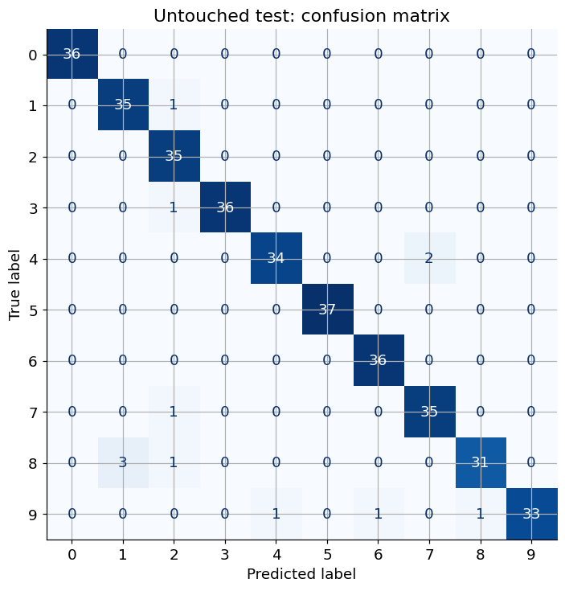
5. Leakage: высокий score может быть плохой новостью
5.1. Почти одинаковые снимки одной цифры
Возьмём по два разных исходных изображения каждой цифры. Для каждого исходника создадим пять почти одинаковых версий с небольшим шумом. Все версии одного исходника имеют общий group_id.
Две проверки отвечают на разные вопросы:
- нечестная по строкам: четыре версии каждого исходника находятся в train, пятая версия того же исходника — в validation;
- честная по группам: все версии первого исходника цифры находятся в train, все версии другого исходника — в validation.
До запуска: в каком случае 1-NN узнаёт конкретную картинку, а не учится распознавать цифру на новом изображении?
copies_rng = np.random.default_rng(SEED)
digit_views = []
view_metadata = []
for digit in range(10):
two_sources = np.flatnonzero(y_dev == digit)[:2]
for source_slot, source_index in enumerate(two_sources):
group_id = f"digit_{digit}_source_{source_slot}"
base_image = X_dev[source_index]
for view_id in range(5):
noise = np.zeros_like(base_image) if view_id == 0 else copies_rng.normal(0, 0.30, size=base_image.shape)
digit_views.append(np.clip(base_image + noise, 0, 16))
view_metadata.append(
{
"digit": digit,
"source_slot": source_slot,
"group_id": group_id,
"view_id": view_id,
}
)
X_views = np.asarray(digit_views)
views = pd.DataFrame(view_metadata)
example_indices = views.index[views.group_id == "digit_3_source_0"]
fig, axes = plt.subplots(1, 5, figsize=(10, 2.4), constrained_layout=True)
for ax, item_index in zip(axes, example_indices):
ax.imshow(X_views[item_index].reshape(8, 8), cmap="gray_r", vmin=0, vmax=16)
ax.set_title(f"view {views.loc[item_index, 'view_id']}")
ax.axis("off")
fig.suptitle("Один group_id = digit_3_source_0: это пять версий одного исходного снимка")
plt.show()
def score_digit_views(train_mask, validation_mask):
model = KNeighborsClassifier(n_neighbors=1)
model.fit(X_views[train_mask], views.loc[train_mask, "digit"])
return model.score(X_views[validation_mask], views.loc[validation_mask, "digit"])
leaky_train_mask = views.view_id < 4
leaky_validation_mask = views.view_id == 4
grouped_train_mask = views.source_slot == 0
grouped_validation_mask = views.source_slot == 1
leakage_scores = pd.DataFrame(
[
(
"row split — same group on both sides",
"another view of an already seen source",
score_digit_views(leaky_train_mask, leaky_validation_mask),
),
(
"group split — source images never cross",
"a genuinely different source image",
score_digit_views(grouped_train_mask, grouped_validation_mask),
),
],
columns=["scheme", "what validation contains", "validation accuracy"],
)
display(leakage_scores.style.format({"validation accuracy": "{:.2f}"}))
assert leakage_scores.loc[0, "validation accuracy"] == 1.0
assert leakage_scores.loc[0, "validation accuracy"] > leakage_scores.loc[1, "validation accuracy"]
def one_nn_score(train_frame, val_frame, feature):
model = KNeighborsClassifier(n_neighbors=1)
model.fit(train_frame[[feature]], train_frame.label)
return model.score(val_frame[[feature]], val_frame.label)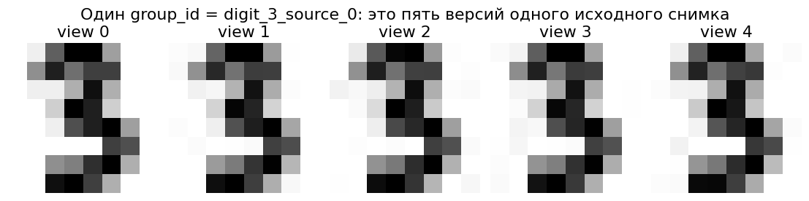
| scheme | what validation contains | validation accuracy | |
|---|---|---|---|
| 0 | row split — same group on both sides | another view of an already seen source | 1.00 |
| 1 | group split — source images never cross | a genuinely different source image | 0.80 |
В первой строке validation проверяет почти копирование: рядом уже лежит почти тот же массив пикселей. Во второй строке validation действительно проверяет перенос на другой исходный снимок. Поэтому высокий результат первой схемы не отвечает на нужный вопрос.
Практические group_id: пациент, пользователь, устройство, исходное изображение до аугментаций, один ролик и его кадры. Объекты одной группы нельзя независимо разбрасывать между train и validation.
5.2. Будущее попало в обучение
В момент T5 режим меняется с A на B. Сравним случайное разбиение с честным прогнозом будущего по прошлому.
temporal = pd.DataFrame(
[(f"T{t}", t, "A" if t <= 4 else "B") for t in range(1, 9)],
columns=["id", "time", "label"],
)
random_train = temporal.query("time in [1, 3, 5, 7]")
random_val = temporal.query("time in [2, 4, 6, 8]")
past = temporal.query("time <= 4")
future = temporal.query("time >= 5")
temporal_scores = pd.DataFrame(
[
("random split (uses future neighbors)", one_nn_score(random_train, random_val, feature="time")),
("time split (past → future)", one_nn_score(past, future, feature="time")),
],
columns=["scheme", "validation accuracy"],
)
display(temporal)
display(temporal_scores.style.format({"validation accuracy": "{:.2f}"}))
assert np.allclose(temporal_scores["validation accuracy"], [1.0, 0.0])| id | time | label | |
|---|---|---|---|
| 0 | T1 | 1 | A |
| 1 | T2 | 2 | A |
| 2 | T3 | 3 | A |
| 3 | T4 | 4 | A |
| 4 | T5 | 5 | B |
| 5 | T6 | 6 | B |
| 6 | T7 | 7 | B |
| 7 | T8 | 8 | B |
| scheme | validation accuracy | |
|---|---|---|
| 0 | random split (uses future neighbors) | 1.00 |
| 1 | time split (past → future) | 0.00 |
Низкий score честного time split не означает, что разбиение «мешает модели». Он показывает реальную задачу: в прошлом не было примеров нового режима.
Контрольный список перед оценкой:
- Какая информация реально доступна в момент предсказания?
- Есть ли версии одного объекта, группы или соседние моменты времени?
- Все ли шаги preprocessing обучаются только внутри train/fold?
- Не использовали ли мы test для выбора решения?
Бонус A. YSDA cross-validation riddle
Сгенерируем признаки и случайные метки, между которыми нет настоящей связи. Затем выберем признаки, наиболее коррелирующие с target.
Вариант 1 делает feature selection заранее по всему датасету. Вариант 2 помещает selection внутрь Pipeline, поэтому на каждом fold он видит только fold-train.
До запуска: в каком варианте CV-score окажется подозрительно высоким?
noise_rng = np.random.default_rng(SEED)
X_noise = noise_rng.normal(size=(120, 1500))
y_noise = noise_rng.integers(0, 2, size=120)
riddle_cv = StratifiedKFold(n_splits=6, shuffle=True, random_state=SEED)
selector = SelectKBest(score_func=f_classif, k=100)
X_selected_too_early = selector.fit_transform(X_noise, y_noise)
leaky_scores = cross_val_score(
LinearSVC(dual="auto", max_iter=5000),
X_selected_too_early,
y_noise,
cv=riddle_cv,
scoring="accuracy",
)
honest_pipeline = Pipeline(
[
("select", SelectKBest(score_func=f_classif, k=100)),
("model", LinearSVC(dual="auto", max_iter=5000)),
]
)
honest_scores = cross_val_score(
honest_pipeline,
X_noise,
y_noise,
cv=riddle_cv,
scoring="accuracy",
)
riddle_results = pd.DataFrame(
{
"fold": np.arange(1, len(leaky_scores) + 1),
"selection before CV (leakage)": leaky_scores,
"selection inside pipeline": honest_scores,
}
)
display(riddle_results.style.format(precision=2))
print(f"Leaky mean: {leaky_scores.mean():.3f}")
print(f"Honest mean: {honest_scores.mean():.3f} (chance level is about 0.5)")
assert leaky_scores.mean() > 0.75
assert abs(honest_scores.mean() - 0.5) < 0.20| fold | selection before CV (leakage) | selection inside pipeline | |
|---|---|---|---|
| 0 | 1 | 0.95 | 0.45 |
| 1 | 2 | 0.90 | 0.55 |
| 2 | 3 | 0.95 | 0.35 |
| 3 | 4 | 0.90 | 0.35 |
| 4 | 5 | 0.85 | 0.55 |
| 5 | 6 | 0.90 | 0.50 |
Leaky mean: 0.908 Honest mean: 0.458 (chance level is about 0.5)
Почему это утечка: target всех будущих validation folds уже участвовал в выборе 100 «удачных» признаков. cross_val_score честно переобучает только классификатор, но не может отменить информацию, внесённую заранее.
Pipeline — не просто удобный синтаксис. Он задаёт границу того, что обязано переобучаться внутри каждого fold.
Бонус B. Проклятие размерности
В большой размерности расстояния до «ближайшего» и «далёкого» объекта становятся менее контрастными. Посмотрим на отношение
Чем оно меньше, тем труднее отличить действительно близкого соседа по одной только евклидовой геометрии.
dimension_rows = []
dim_rng = np.random.default_rng(SEED)
for dimension in [2, 5, 10, 25, 50, 100, 250, 500]:
points = dim_rng.normal(size=(1000, dimension))
query = dim_rng.normal(size=dimension)
distances = np.linalg.norm(points - query, axis=1)
dimension_rows.append(
{
"dimension": dimension,
"nearest": distances.min(),
"farthest": distances.max(),
"relative contrast": (distances.max() - distances.min()) / distances.min(),
}
)
dimension_results = pd.DataFrame(dimension_rows)
ax = dimension_results.plot(
x="dimension",
y="relative contrast",
marker="o",
logx=True,
legend=False,
figsize=(9, 5),
)
ax.set(ylabel="(farthest - nearest) / nearest", title="Distance contrast shrinks with dimension")
plt.show()
display(dimension_results.style.format({"nearest": "{:.2f}", "farthest": "{:.2f}", "relative contrast": "{:.2f}"}))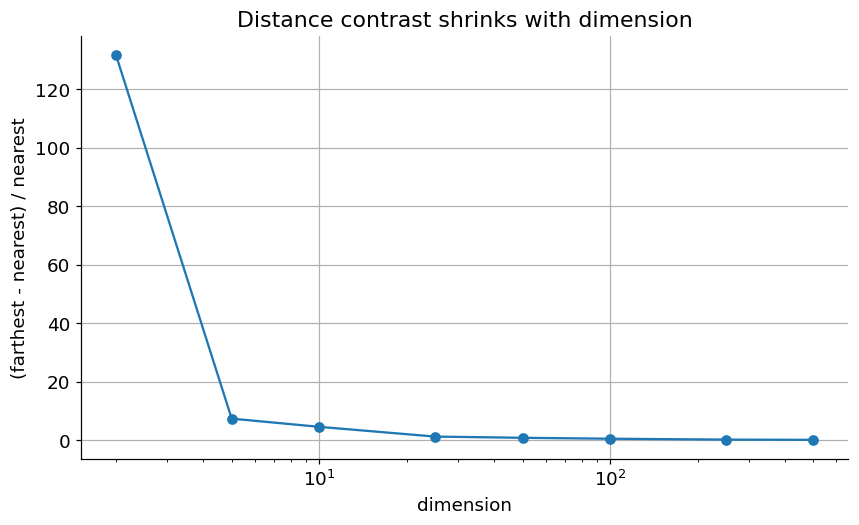
| dimension | nearest | farthest | relative contrast | |
|---|---|---|---|---|
| 0 | 2 | 0.03 | 4.34 | 131.69 |
| 1 | 5 | 0.74 | 6.20 | 7.44 |
| 2 | 10 | 1.48 | 8.31 | 4.64 |
| 3 | 25 | 4.73 | 10.92 | 1.31 |
| 4 | 50 | 6.95 | 13.16 | 0.89 |
| 5 | 100 | 10.97 | 17.33 | 0.58 |
| 6 | 250 | 19.54 | 24.92 | 0.28 |
| 7 | 500 | 28.60 | 34.20 | 0.20 |
Итоги и exit ticket
kNN — короткий алгоритм, но длинный список содержательных решений:
- какие признаки сравнивать;
- как их масштабировать;
- что считать расстоянием;
- сколько соседей брать и как взвешивать их ответы;
- каким разбиением имитировать настоящее будущее применение;
- насколько вывод зависит от одной точки или одного split.
Закончите одну фразу:
- «Перед запуском kNN я обязан спросить про данные: …»
- «Validation отличается от test тем, что …»
- «Высокий CV-score может быть обманчивым, если …»
- «Расстояние является содержательным выбором, потому что …»
Происхождение примеров
Ноутбук собран как обновлённая линия первого занятия курса:
- геометрия kNN и границы решений — из семинарских наработок
ml-course, включая ветки24f_ysdaи25f_mipt; - постановочные вопросы и Iris/CV-акцент — из
25s_msai; - идея финального примера на рукописных цифрах — из задания
classic_knn, основанного на Stanford CS231n; - feature-selection riddle — из материалов Yandex School of Data Analysis / MLatImperial;
- точки, выброс, масштаб, group/time leakage и сценарий «сначала прогноз» — из подготовки сегодняшней лекции.
Все данные, нужные для основного пути, встроены в notebook или входят в scikit-learn. Сетевой доступ не требуется.